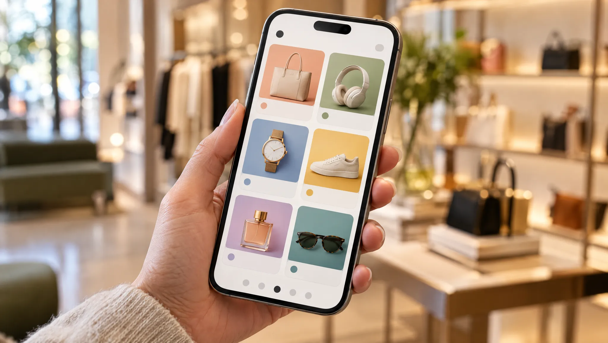

Market and Competitors
A $90bn Market
Budgets are moving from agencies to operations and AI. Wipro has the scale. Designit is how it leads with design.
Select a competitor to see how Wipro wins against it.
Size
Where the Money Is
Four numbers that shape every pitch.
DX services, 17 largest providers
2024 revenue, growing 6% a year.
Adobe services growth
A year to 2027, on a $21bn to $23bn base.
Outcome-based
Of DX revenue on average. Rising.
Agentic AI projects
Expected to be cancelled by 2027.
Sources: Gartner MQ via Spotlight AR; Everest Group, Oct 2025; Gartner, 25 Jun 2025
Budgets
From Agencies to Operations
Share of the marketing budget, Gartner CMO Spend Survey.
Sources: Gartner, 12 May 2025; Gartner, 11 May 2026; Marketing Dive, 7 Jul 2026
Analysts
Where Wipro Stands
A Leader in Salesforce services. Behind in Adobe and the Gartner DX MQ.
Show the ratings table
| Provider | Gartner MQ, DX Services, Oct 2025 | Everest, Adobe Services, 2025 | Everest, Salesforce Services, 2024 | Forrester Wave, Commerce Services, Q1 2026 |
|---|---|---|---|---|
| Accenture Song | Leader | Leader | Leader | Leader |
| Deloitte Digital | Leader | Leader | Leader | Not found |
| Publicis Sapient | Leader | Leader | Not found | Leader |
| Capgemini and frog | Leader | Leader | Leader | Not found |
| IBM iX | Challenger or Visionary | Leader | Leader | Not found |
| Infosys and WONGDOODY | Challenger or Visionary | Leader | Leader | Not found |
| HCLTech | Challenger or Visionary | Major Contender | Major Contender | Not found |
| EPAM | Challenger or Visionary | Major Contender | Not found | Not found |
| Valtech | Challenger or Visionary | Not found | Not found | Not found |
| TCS Interactive | Not found | Leader | Major Contender | Not found |
| Cognizant Moment | Niche Player | Major Contender | Leader | Not found |
| Wipro | Niche Player | Major Contender | Leader | Not included |
Sources: Gartner MQ text via Spotlight AR; ISG Salesforce Ecosystem US, 27 Apr 2026
Competitors
Five Rivals, Five Answers
Swipe for how I would sell against each.
Accenture Song
Their edge About $20bn of revenue in FY25 and about 121,000 DX practitioners. Gartner, Forrester and Everest all rate it a Leader.
How Wipro wins Offer a fixed-price design phase and a managed run at a lower blended rate, with named senior people in the client's time zone.
Deloitte Digital
Their edge Highest ability to execute in the 2025 Gartner MQ. Advise, implement and operate model. Deep Salesforce bench.
How Wipro wins Win the scoped work Deloitte will not prioritise, then grow it. Put outcome measures in the contract from day one.
Publicis Sapient and the agency groups
Their edge Integrated media, creative and technology, with data assets such as Publicis ID. Often the incumbent agency.
How Wipro wins Partner with the incumbent agency on creative and take the platform, content operations and AI run work they staff thinly.
Infosys, TCS and HCLTech
Their edge The same offshore economics as Wipro, larger Adobe benches (Everest Leaders for Infosys and TCS) and strong North American client bases.
How Wipro wins Compete on Salesforce, Pega and ServiceNow strength, Designit's design studios and AI platforms, and on a sharper industry point of view.
EPAM, Globant and Valtech
Their edge Engineering-led or design-led firms with nearshore delivery and newer commercial models such as Globant's AI Pods subscription.
How Wipro wins Use Wipro's scale for global run, managed services and multi-tower deals they cannot staff.
Objections
Weak Points, Answered
Procurement reads the same analyst reports. Raise them first.
They say
“Wipro is a Niche Player in the Gartner DX MQ”
I answer Lead with a Designit-led diagnostic and an onshore experience lead. Show the run economics only after the client trusts the design thinking.
They say
“About 80% of Wipro's DX staff are in APAC”
I answer Staff the first phase onshore and nearshore. Move to the offshore model in build and run, with the client's agreement on the transition plan.
They say
“Only 6% of Wipro's DX staff are creative”
I answer Position Wipro beside the creative agency, running the platforms, content supply chain and AI agents.
They say
“Large-deal bookings fell to $674m in Q2 FY27”
I answer Bring large-deal shaping skill and a pipeline of trigger-based proactive proposals in the first two quarters.